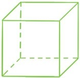
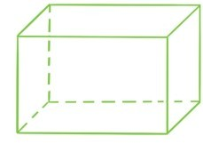
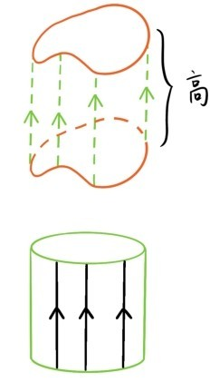
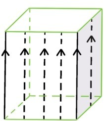
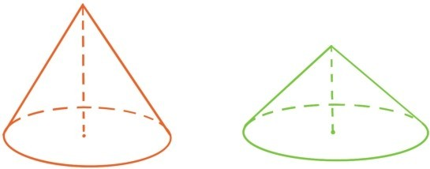
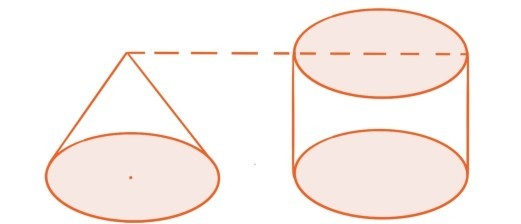

如果说面积可以解释为平面图形所占据区域的大小，体积就可以解释为立体图形所占据的空间大小。和面积类似，用边长为1厘米的正立方体作为单位立方体来衡量体积大小，规定单位立方体的体积是1立方厘米。和求长方形面积类似的理由可以说明，长方体的体积等于长×宽×高。


一个平面图形，沿着与平面垂直的方向向上平移，所划过的空间图形，称为柱体，划过的距离称为柱体的高，原先的平面图形称为柱体的底面。
如果底面是圆，就称这种柱体为圆柱。圆柱在现实生活和自然界中常常碰到，比如被截成一段一段的树干、房屋的梁柱、蜡烛等。

所有的长方体都是底面为长方形的柱体，所以长方形的体积是等于底面面积×高。实际上所有柱体的体积都等于底面面积×高。

最后介绍圆锥。圆锥是指下面这类立体图形，其中尖点是在底面圆心的正上方，尖点和圆心的距离称为圆锥的高。

在一个黑暗的房间中，打开手电筒正对着墙面，这时光线形成的立体图形就是一个圆锥，墙面上被照亮的区域就是圆锥的底面，手电筒的位置就是圆锥的尖点。
有些小学数学课本是利用实验的方法来得出圆锥的体积公式的，用一个圆锥形容器盛满水倒入一个同底等高的圆柱容器，倒3次后圆柱容器刚好满了，所以圆锥体积等于同底等高圆柱体积的 。

根据柱体体积公式，得到
但是这种实验的方法并不能说服所有学生，好奇心强的学生难免会问：为什么用圆锥容器盛水倒入3次后，同底等高的圆柱容器刚好会满？或者
问题36：为什么圆锥的体积等于同底等高圆柱体积的 ？
第十章会详细解释这个问题。
提问时间
2.5.1 一个底面半径为3厘米、高为9厘米的圆柱容器盛满水，倒入一个底面半径为4厘米、高为15厘米的圆锥容器，能倒满吗？
2.5.2 一个长为12米，宽为5米，高为4米的方形粮仓和一个底面半径为7米，高为5米的圆锥形粮仓，哪个能存储更多粮食？